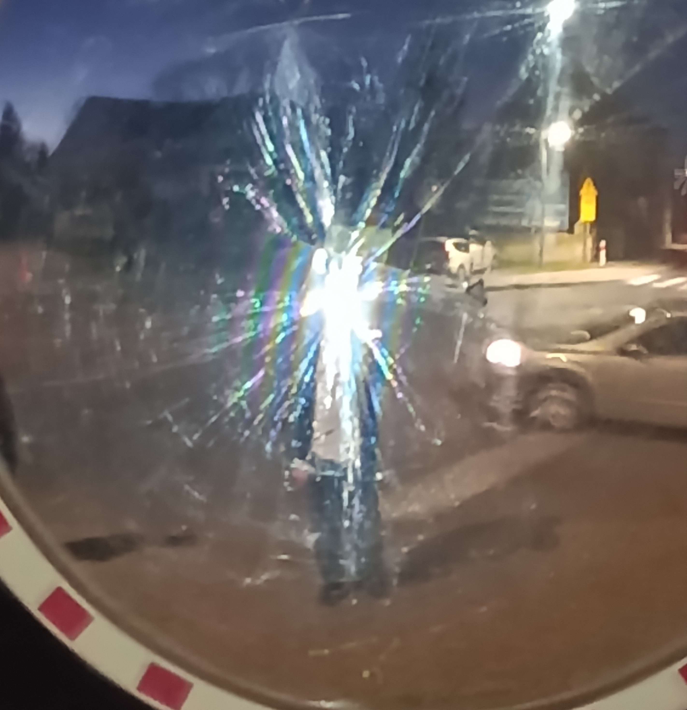
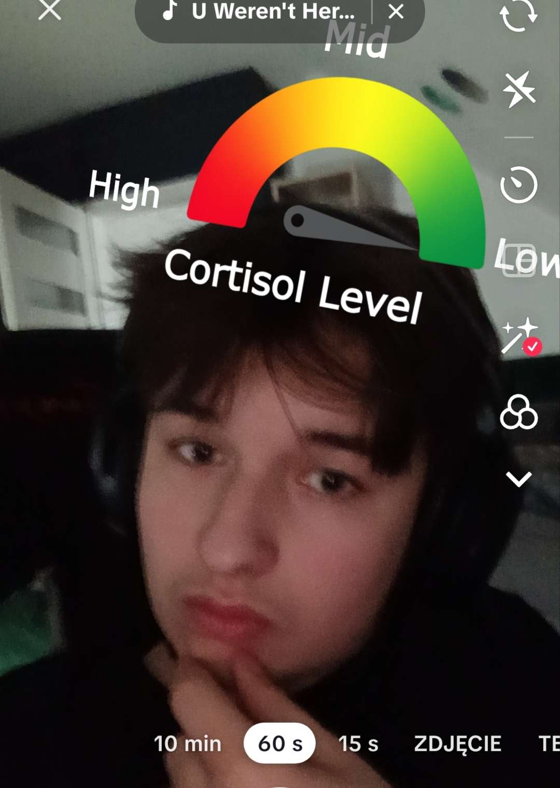
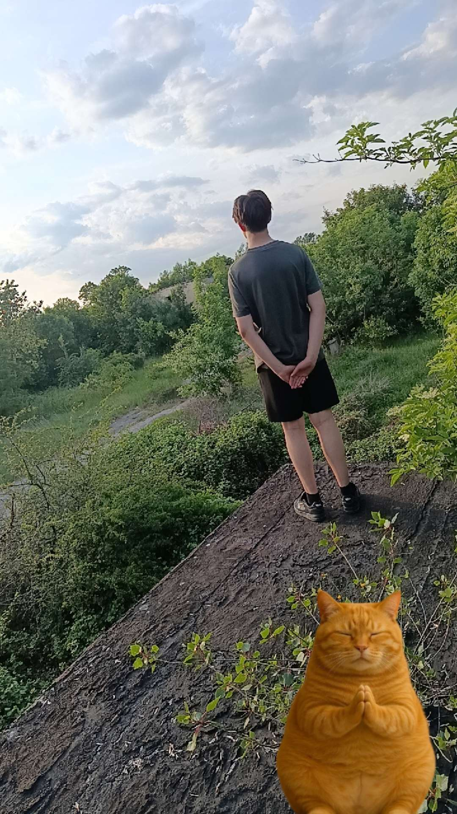
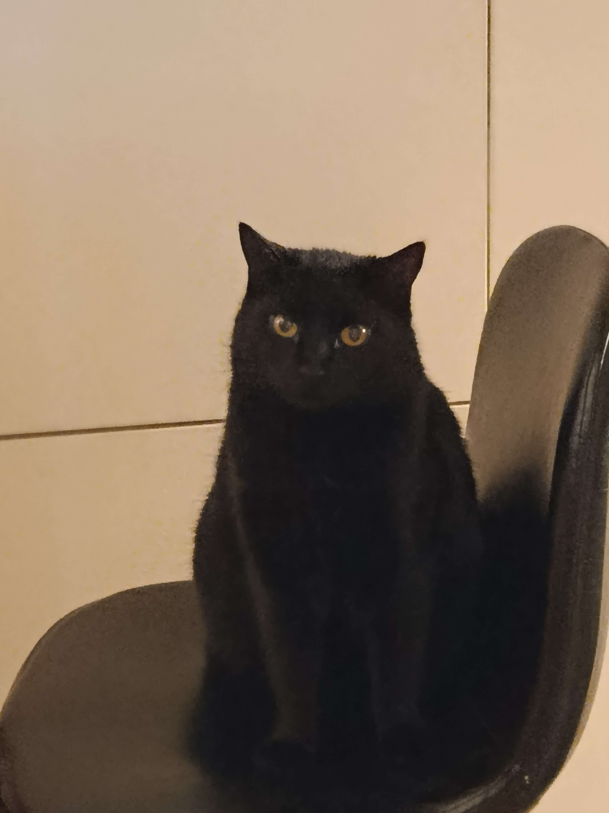
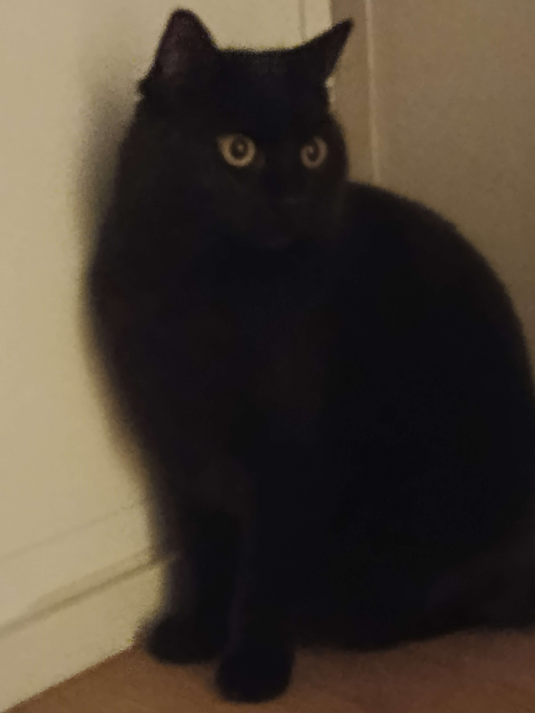
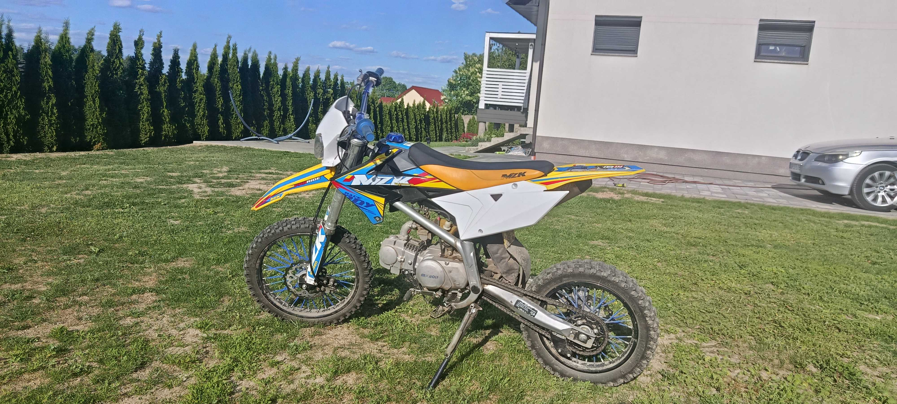
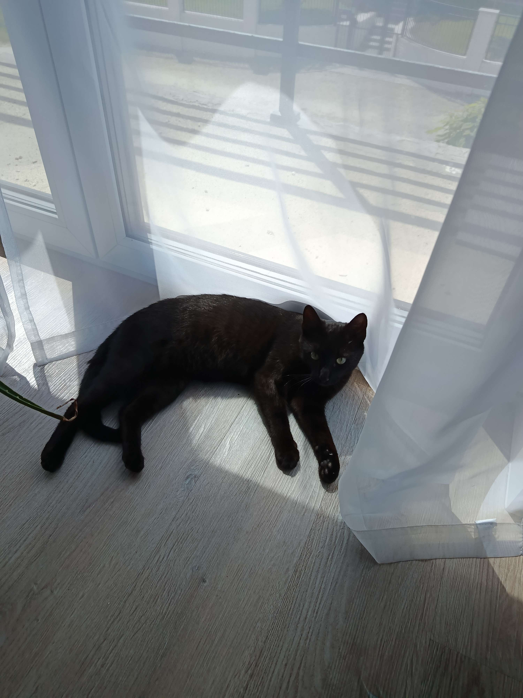

✕
‹
›

Nazywam się Adam, mam 15 lat i mieszkam w Rakoszycach. Aktualnie uczę się w Szkole Podstawowej im. Sybiraków w Rakoszycach. Nie przepadam za chemią, za to informatyka to mój żywioł.
Planuję kontynuować naukę w Zespole Szkół nr 2 im. Wincentego Witosa w Środzie Śląskiej na kierunku technik elektryk.
W wolnym czasie gram w gry, jeżdżę na crossie i słucham muzyki. Ghostrunner to moja ulubiona seria — mam wszystkie osiągnięcia w obu częściach. Śledzę też seriale jak Invincible i The Boys.
Mam dwa koty, oba znalezione. Pusia (5 lat) trafiła do nas z rowu przy ścieżce rowerowej — zdrowa i mega miła kicia. Simbę znaleźliśmy na własnym podwórku jako malutkiego, miesięcznego kociaka — nie wiadomo skąd się tam wziął. Jest z nami już 2 lata i ma się świetnie.
Jednoosobowe gry fabularne to moje ulubione. Ghostrunner 1 i 2 — wszystkie osiągnięcia. Lubię gry z klimatem i historią, które wciągają bez reszty.
Jazda terenowa to coś co uwielbiam. Uwielbiam tę adrenalinę podczas jeżdżenia. Jeżdżę hobbystycznie, zwykle z kolegami.
Amerykański trap to mój ulubiony gatunek. Ken Carson to mój ulubiony wykonawca. Uwielbiam te unikalne bity, szczególnie w "Me N My Kup".
Invincible i The Boys — seriale które nie udają, że są dla dzieci. Akcja, klimat i historia która gryzie to moja definicja dobrego oglądania.






Chcesz się odezwać? Znajdziesz mnie na Instagramie, Discordzie lub Messengerze. Odpisuję kiedy mam humor.